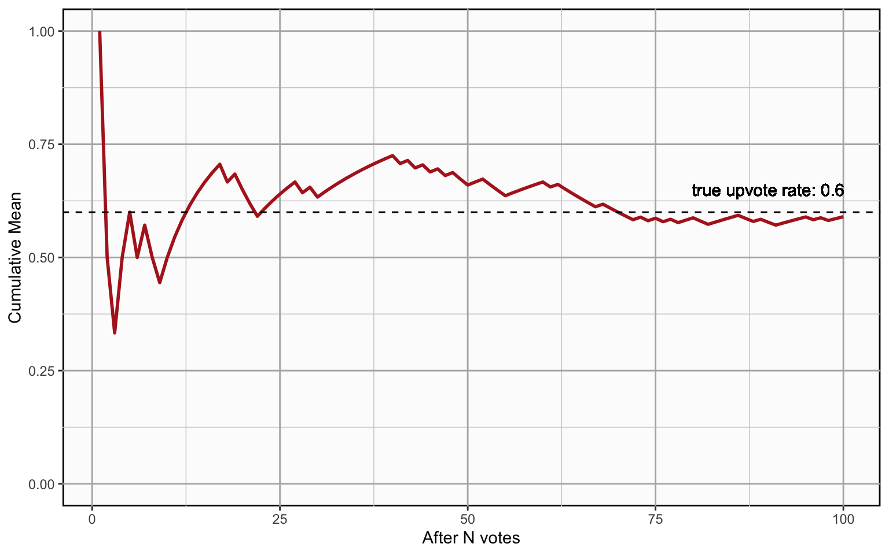

5 Information Value
The goal of the global brain algorithm is to focus users’ attention on posts that reduce cognitive dissonance. Our formula for measuring cognitive dissonance is described here.
In information theory, information is the reduction of entropy. Since we define cognitive dissonance as entropy, reducing cognitive dissonance can also be seen as gaining information. Thus the goal of the global brain algorithm is to directs attention to notes with the greatest potential information gain.
In cognitive dissonance, we explain how relative entropy is reduced as users change their votes, which means that information is gained when users change beliefs. But how much information is gained when users upvote or downvote a new post they have not previously voted on? We don’t know how much that post changed users beliefs, because we don’t know what their beliefs were before they saw the post. Without two probability distributions to compare, we can’t calculate information value in terms of reduction of entropy. Yet obviously new posts do convey information – something users didn’t know or hadn’t seen before, or they wouldn’t upvote the post.
By making some conservative estimates about users’ prior beliefs, we can quantify the information gain for new posts and derive a single metric for estimating the information value of a vote, whether that vote is a new upvote (new information learned by users), or a changed vote (decrease in cognitive dissonance). In this article we will introduce the formula and the reasoning behind it.
5.1 The Information Value of a Vote
First, here is a summary of the information value formula:
- new votes:
\[ votesTotal × p × (1 + {\lg p}) \]
- changed votes:
\[ \begin{aligned} votesTotal × ( p × {\lg \frac{q_1}{q}} + (1-p) × {\lg \frac{1-q_1}{1-q}} ) \end{aligned} \]
where:
- p is the informed probability
- q is the uninformed probability
- q1 is the probability after \(deltaUpvotes\) votes where changed: \((upvotes + deltaUpvotes)/votesTotal\)
5.2 Information Value of Changed Votes
Whenever the global brain learns that a note has change the probability of an upvote on a post, \(p\) becomes different from \(q\) and therefore cognitive dissonance is created. But as users are shown the note and change their votes so that \(q\) once again approaches \(p\), cognitive dissonance is reduced.
The information value from moving from \(q\) to \(q_1\) is just the reduction in in cognitive dissonance, or reduction in total relative entropy.
\[ \begin{aligned} votesTotal × D_{KL}(p || q) - votesTotal × D_{KL}(p || q_1) \end{aligned} \]
This equation simplifies to:
\[ \begin{aligned} & votesTotal × D_{KL}(p || q) - D_{KL}(p || q_1) ) \\ &= votesTotal × ( p × {\lg \frac{p}{q}} + (1-p) × {\lg \frac{1-p}{1-q}} ) \\ &- votesTotal × ( p × {\lg \frac{p}{q_1}} + (1-p) × {\lg \frac{1-p}{1-q_1}} ) \\ &= votesTotal × p × {\lg \frac{q_1}{q}} + (1-p) × {\lg \frac{1-q_1}{1-q}} \end{aligned} \]
5.3 Information Value of New Votes
In the case of new votes, measuring the change in entropy is harder because we don’t know what users’ beliefs were before they voted. Yet clearly new posts provide information, otherwise users would not upvote them. The upvotes tell us that the post has changed beliefs in some way. They caused users to believe things they didn’t believe before.
We don’t know what those beliefs were, but we can make a conservative estimates about those prior beliefs using the maximum entropy principle. The probability with maximum entropy (for binary outcomes such as upvote/downvote) is \(q=0.5\): which has an entropy of 1 bit.
However, if we just plug \(q=0.5\) into the information value formula, the results don’t make sense. First, information value is always positive: moving from \(q\) to \(p\) always reduces relative entropy, no matter what \(q\) and \(p\) are. What’s more, a new post with a very small \(p\) will have high relative entropy – the smaller the \(p\) the higher – yet shouldn’t posts with small \(p\) have less information value?
To create an information value formula that makes sense for new upvotes, we need recognize that new upvotes mean something different from changed upvotes.
5.4 What Does a Vote Mean?
We assume that an upvotes reflect the intent for a post to receive more attention. Further, we assume that the intent of the community is to find information that is both:
- informative, and
- relevant
A post is informative if it causes a user to hold a belief, or mental state, they didn’t hold before. Simple statements of facts are informative if the user trusts the source. There’s going to be a big storm in Madrid tomorrow is likely informative. A joke can also be informative if the user hadn’t heard the joke before, because it causes a change in belief or hidden mental state (here is a funny joke!). Bigfoot exists is likely not informative, because people are unlikely to believe bigfoot exists just because somebody on the internet said so.
Therefore, we assume that people do not upvote posts that are not informative.
On the other hand, people downvote posts when they think they are not informative or not relevant. A downvote means that a post did not change beliefs (or if it did, that belief was irrelevant). If somebody downvotes there’s going to be a big storm in Madrid tomorrow it’s because they think it’s irrelevant (e.g. if it is posted in the wrong forum) or uncertain. But they believe this despite seeing the post, not because of it. The post itself did not change their beliefs.
So there is an asymmetry between upvotes and downvotes. If the information is in fact false, people who downvoted weren’t harmed, because they knew it was false an their beliefs did not change (yes their time was wasted, but let’s ignore wasted time and focus on the idea of cognitive dissonance). But those who upvoted it changed their beliefs and these beliefs are false. So upvotes on false information indicate harm was done. Users were misinformed, and misinformation has negative information value.
5.5 Example 1: A Storm in Madrid
For example, suppose I have not yet seen post A, telling me about a big storm forecast for Madrid tomorrow, posted in a Spain travel forum. Users who have not yet heard about the storm do not believe there will be a big storm tomorrow. They are probably not absolutely certain about the belief, but their prior beliefs before seeing the post, if expressed as a probability, are probably quite small.
Suppose that most users who see this post upvote it, but almost nobody downvotes it. This means that a lot of people didn’t know about the storm before they saw the post: a lot of information was gained for these users. It also means there is a lot of potential information value for users who have not yet seen the post.
So a lot of upvotes, with relatively few downvotes, represent an information value proportional to the number of upvotes. But as downvotes increase, uncertainty increases rapidly. By the time the number of downvotes exceeds the number of upvotes, the post is deemed by the community as more likely to be misinformation than information.
5.6 Example 2: A Typhoon in Oslo
Now consider a post that receives a very large number of downvotes, and only 1 upvote. For example a post falsely claiming that a category 5 typhoon will hit Oslo tomorrow (a geographical impossibility). How much information was gained, or lost?
Here the upvote tells us somebody actually believed the post (still assuming good faith voting). So somebody now believes something they didn’t believe before. And what’s more, what they believe is probably not true and relevant, in the judgment of the community.
So the increase in the number of users who believe something that is probably not true and relevant actually increases entropy.
Now suppose instead of only 1 upvote, there were 10 upvotes. Now 10x as much entropy was created, because 10 users were misinformed, not just 1.
So a post with a very low upvote rate indicates an information loss (negative information value) proportional to the number of upvotes.
5.7 Desired Properties of Information Value Formula
So for new information, the information value formula should have the following properties:
- Many upvotes, no downvotes: informationValue ≈ upvotes
- Many downvotes, no upvotes: informationValue ≈ 0
- Many downvotes, small number of upvotes: informationValue ≈ -upvotes
- Equal number of upvotes and downvotes: informationValue ≈ 0
5.8 Upvote-Only Relative Entropy
These properties are all met by a formula that assumes a prior belief \(q=0.5\) and then only counts the information value of upvotes. Going back to the fundamental concept of surprisal from information theory, which we introduced when developing the formula for cognitive dissonance, we can calculate the total suprisal of upvotes is
\[ upvotes × -{\lg p} \]
Assuming \(q=0.5\), the most conservative estimate of the total surprisal before users saw the post is
\[ upvotes × -{\lg 0.5} \]
The difference is
\[ \begin{aligned} &upvotes × -{\lg 0.5} - (upvotes × -{\lg p}) \\ &= upvotes × {\lg \frac{p}{0.5}} \end{aligned} \]
This is basically the formula for relative entropy, \(upvotes × D_{KL}(p, 0.5)\), but “cut in half”: counting only the upvotes.
Since \(-{\lg 0.5} = 1\), we can further simplify this to
\[ \begin{aligned} upvotes × (1 + {\lg p}) \end{aligned} \]
One way of looking at this formula is to think of each upvote as representing 1 potentially-uncertain bit of information. If \(p\) is 100%, then there is no uncertainty, and each upvote is worth 1 bit of information. But if \(q\) is, say, .25, then there are \(-{\lg .25} = 2\) bits of uncertainty about the information. For each user who accepted the information, uncertainty was reduced by 1 bit, but another \(-{\lg .25} = 2\) bits of uncertainty about the accuracy of the information was created, for a net loss of 1 bit.
5.9 Example Charts
The chart below illustrates how the information value of a post with a large number of upvotes falls as the number of downvotes increases (e.g. the Storm in Madrid example, but as doubts about the accuracy of the forecast start to increase).

The chart below illustrates how the information value of a post with a large number of downvotes becomes increasingly negative as the number of upvotes increases, but then begins to rise as the information becomes less uncertain.